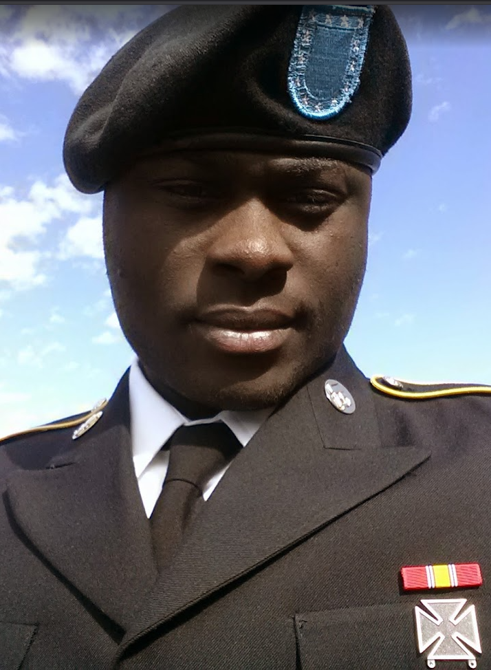

Bowie, MD | johnzama08@gmail.com | Previously Held DoD Secret Clearance
Building secure cloud infrastructure, automation workflows, and DevSecOps solutions using AWS, Docker, Linux, GitHub, Infrastructure as Code, and cybersecurity best practices.
Security-cleared Cloud and DevSecOps Engineer with hands-on experience supporting AWS environments, Linux administration, infrastructure automation, containerization, cloud governance, and cybersecurity operations. Experienced with CI/CD workflows, Infrastructure as Code, STIG compliance, cloud monitoring, and secure system administration.
Built and containerized a responsive cloud resume portfolio using Docker, NGINX, Linux, GitHub, and HTML/CSS.
Docker NGINX LinuxDesigned secure cloud workflow concepts using S3, Glue, Lambda, Athena, IAM, and CloudWatch for data governance and monitoring.
AWS S3 GluePracticed Infrastructure as Code, security hardening, container workflows, cloud automation, and CI/CD pipeline concepts.
DevSecOps CI/CD SecurityAWS EC2, S3, Lambda, IAM, VPC, CloudFormation, Glue, Athena, CloudWatch, CloudTrail
Docker, Jenkins, Git, GitHub, GitHub Actions, Ansible, Kubernetes Foundational Knowledge
DISA STIGs, NIST 800-53, IAM Policy Management, Security+, Cloud Security
TCP/IP, DNS, VPNs, LAN/WAN, Routing & Switching, Cisco Networking, Firewalls
Trillion Technology Solutions – DISA Support | Oct 2024 – Apr 2025
DC Army National Guard | Jun 2021 – Jun 2024
Army National Guard | Jun 2018 – Jun 2021
Served in military IT, cybersecurity, and communications roles supporting mission-critical infrastructure, secure communications, and operational readiness.
Cloud Infrastructure • AWS • DevSecOps • Linux Administration • Docker • Cybersecurity • STIG Compliance • Infrastructure as Code • Networking • Automation • IAM • Security Operations • CI/CD • Cloud Governance • Technical Troubleshooting
University of Maryland Global Campus (UMGC)
Bachelor’s Degree in Cybersecurity Technology